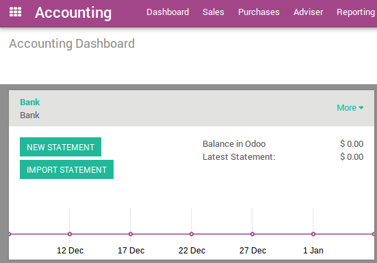
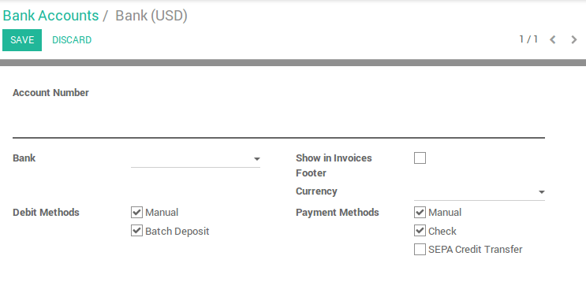

In Odoo, you can manage multiple bank accounts. In this page, you will be guided in the creation, modification or deletion of a bank or a credit card account.
Edit a bank account
To ease the process, a bank account is already there. We suggest you to edit it first before filling your own bank information.
Go to and click on the Bank item. Edit it.
Примечание
Odoo will detect the bank account type (e.g. IBAN) to allow some payment method like SEPA
Create a bank account
Go to . Click on create and fill in the form. You can decide to show the bank account number in you intend to send documents like sales orders or invoices. Select the payments methods you support with this bank account.
Примечание
If you are working in a multi-company environnement, you'll have to switch the company on your user preferences in order to add, edit or delete bank accounts from another company.
The initial balance of a bank statement will be set to the closing balance of the previous one within the same journal automatically.
Delete a bank account or credit card account
From the list of bank accounts, select items to delete and delete them from the action menu or go to the form and delete a single item from the action menu